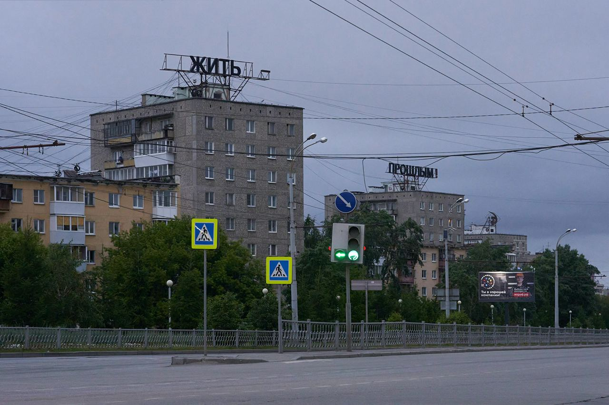

Olive Kitteridge (2014)

Очень хороший сериал с Френсис МакДорманд и (совсем чуть-чуть) Биллом Мюрреем!
Очень хороший сериал с Френсис МакДорманд и (совсем чуть-чуть) Биллом Мюрреем!

Гуляли сегодня по центру Пхукета, и я увидел приятные камушки на веревочках.
Купил себе.
Заскринил даже что за камушек. Написано Lapis Lazuli.
Купил, пошел, стал гуглить.
Оказалось, что камушек этот — Афганский Лазурит.
А еще он (цитата по википедии):
По имеющимся сведениям, нелегальная добыча и сбыт бадахшанского лазурита является вторым по величине источником дохода движения Талибан, а также причиной коррупции правительственных структур Афганистана.
Так что, похоже, я теперь еще и спонсор Талибана.
Очень сложно себя ассоциировать с тем, что происходит. Невозможно себя с этим ассоциировать.
Каждый день как сон. Как кошмар.
И очень сложно себя деассоциировать со страной, в которой прожил 42 года, в которой живет твой сын, твой брат, твой отец.
Это какой-то замкнутый круг, западня из которой не убежать.
Блядская западня.
Блядский сон.
Блядская ложь.
Блядская ужасная ложь, от которой кружится голова...

Хочу как-то зафиксировать свою позицию:
Как-то так.
Картинка выше из музея Левашовской пустоши.
Открытием последнего времени стал Витя Кравченко с видео про Касаткину и Рублева и Легкую атлетику.
Крайне рекомендую к просмотру.

Тогда мне казалось, что “жить прошлым” — это точный диагноз. Сегодня я думаю, что это приговор. — Тимофей Радя
Сын (3 года) просит купить арбуз:
— Леш, давай купим арбуз?
— Не хочу
— Почему?
— Ну, а вдруг он будет невкусным?
Захар:
— А вдруг он будет вкусным?
Ахах.
Купили.
Вкусный.
Совершенно офигительное и подробное описание устройства наручных механических часов (eng).